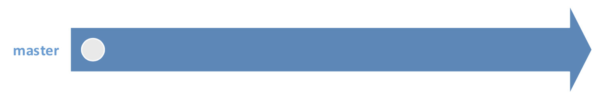
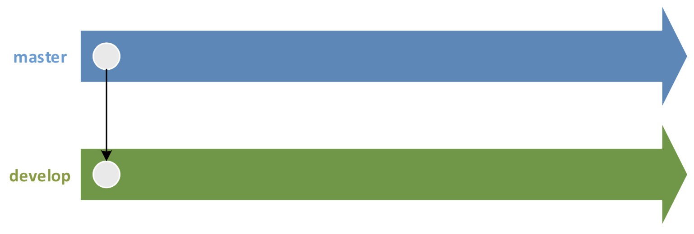
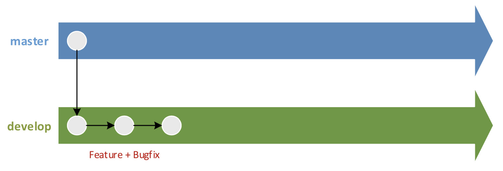
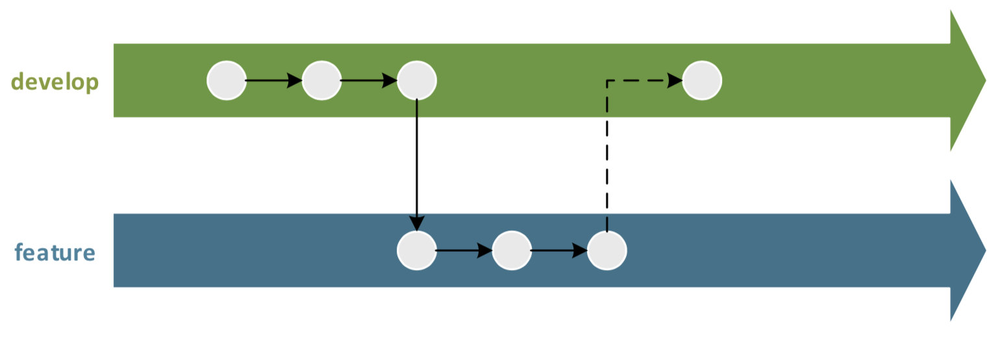
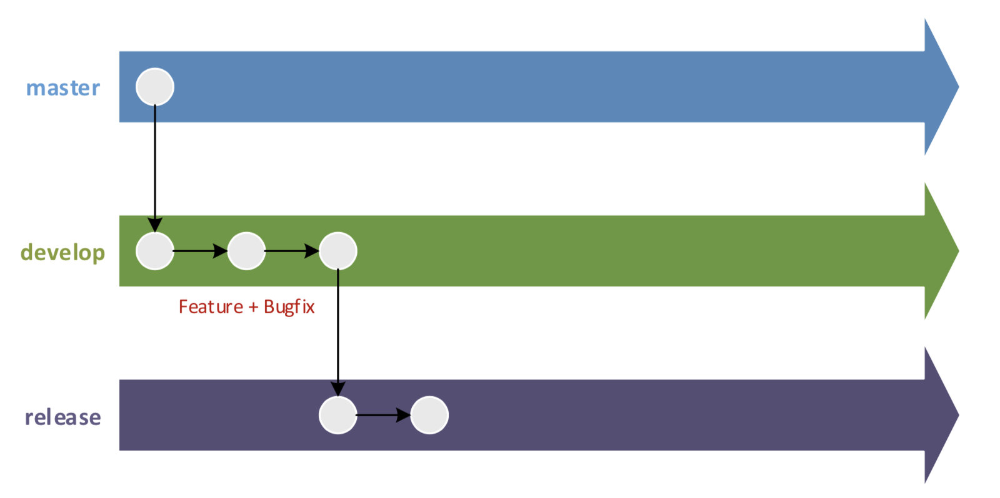
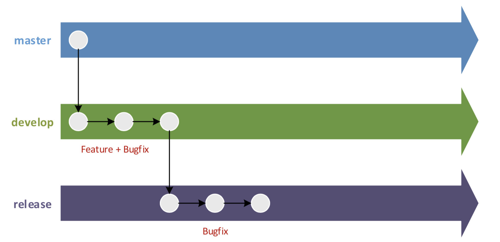
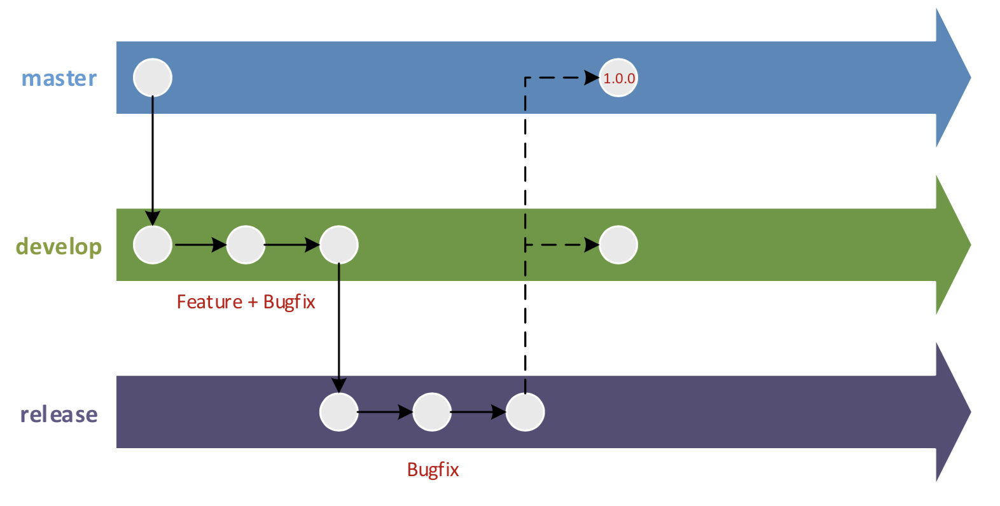
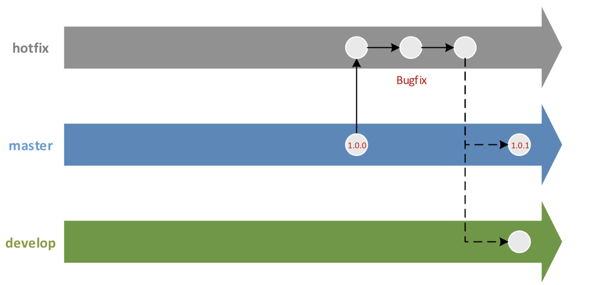
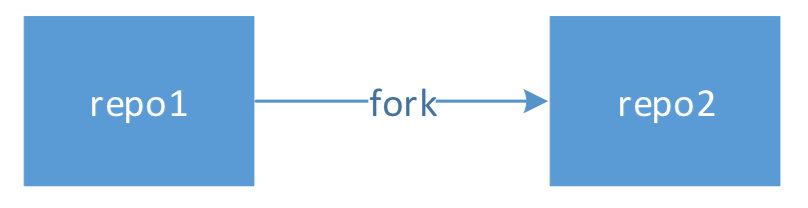
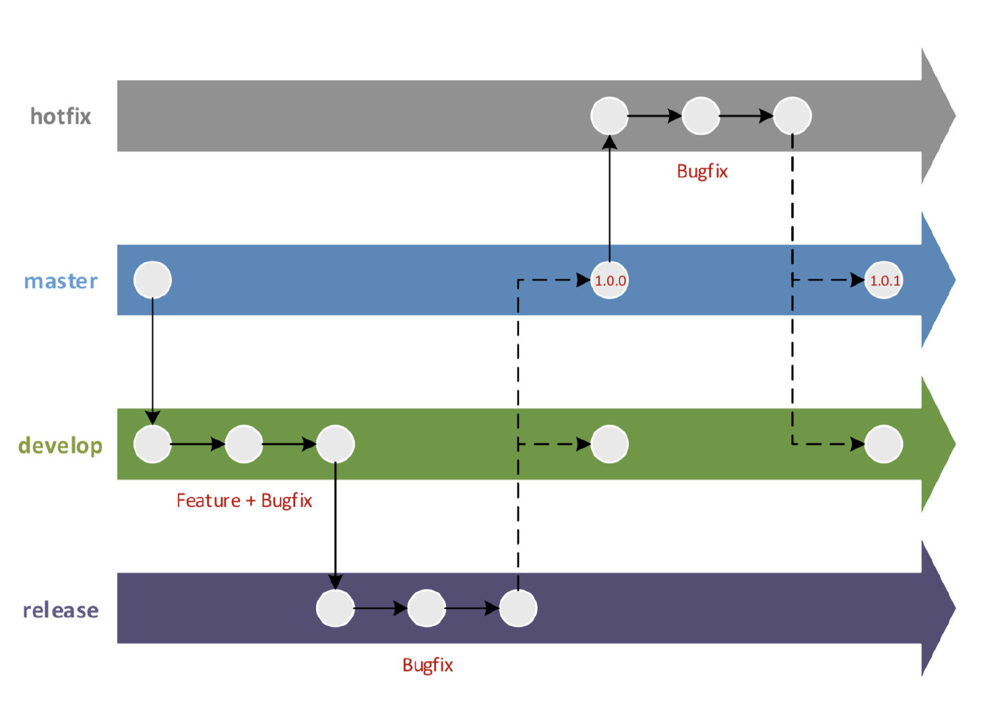

<!DOCTYPE html>
<html>
<head><meta name="generator" content="Hexo 3.8.0">
  <meta charset="utf-8">
  

  
  <title>git代码分支管理规范 | Feng Xiang Blog</title>
  <meta name="viewport" content="width=device-width, initial-scale=1, maximum-scale=1">
  <meta name="description" content="GIT代码提交规范 初始化 Git 仓库  克隆远程仓库  1git clone &amp;lt;仓库地址&amp;gt;  提交并推送初始版本到master   12345# 提交本地修改:git add .git commit –m “提交日志”# 推送 master 分支:git push origin master  创建开发分支 . 克隆master分支到 develop分支，用于开发  1234#">
<meta name="keywords" content="git,git分支管理">
<meta property="og:type" content="article">
<meta property="og:title" content="git代码分支管理规范">
<meta property="og:url" content="https://blog.ofengx.com/2020/08/07/git代码分支管理规范/index.html">
<meta property="og:site_name" content="Feng Xiang Blog">
<meta property="og:description" content="GIT代码提交规范 初始化 Git 仓库  克隆远程仓库  1git clone &amp;lt;仓库地址&amp;gt;  提交并推送初始版本到master   12345# 提交本地修改:git add .git commit –m “提交日志”# 推送 master 分支:git push origin master  创建开发分支 . 克隆master分支到 develop分支，用于开发  1234#">
<meta property="og:locale" content="zh-CN">
<meta property="og:image" content="https://blog.ofengx.com/2020/08/07/git代码分支管理规范/git-master.jpg">
<meta property="og:image" content="https://blog.ofengx.com/2020/08/07/git代码分支管理规范/git-develop.jpg">
<meta property="og:image" content="https://blog.ofengx.com/2020/08/07/git代码分支管理规范/git-bug.jpg">
<meta property="og:image" content="https://blog.ofengx.com/2020/08/07/git代码分支管理规范/git-bug-1.jpg">
<meta property="og:image" content="https://blog.ofengx.com/2020/08/07/git代码分支管理规范/git-release.jpg">
<meta property="og:image" content="https://blog.ofengx.com/2020/08/07/git代码分支管理规范/git-fix.jpg">
<meta property="og:image" content="https://blog.ofengx.com/2020/08/07/git代码分支管理规范/git-release-1.jpg">
<meta property="og:image" content="https://blog.ofengx.com/2020/08/07/git代码分支管理规范/git-bug-2.jpg">
<meta property="og:image" content="https://blog.ofengx.com/2020/08/07/git代码分支管理规范/git-made.jpg">
<meta property="og:image" content="https://blog.ofengx.com/2020/08/07/git代码分支管理规范/git-fix-1.jpg">
<meta property="og:updated_time" content="2020-08-07T03:02:17.122Z">
<meta name="twitter:card" content="summary">
<meta name="twitter:title" content="git代码分支管理规范">
<meta name="twitter:description" content="GIT代码提交规范 初始化 Git 仓库  克隆远程仓库  1git clone &amp;lt;仓库地址&amp;gt;  提交并推送初始版本到master   12345# 提交本地修改:git add .git commit –m “提交日志”# 推送 master 分支:git push origin master  创建开发分支 . 克隆master分支到 develop分支，用于开发  1234#">
<meta name="twitter:image" content="https://blog.ofengx.com/2020/08/07/git代码分支管理规范/git-master.jpg">
  
    <link rel="alternate" href="/atom.xml" title="Feng Xiang Blog" type="application/atom+xml">
  
  
    <link rel="icon" href="/favicon.png">
  
  
    <link href="//fonts.googleapis.com/css?family=Source+Code+Pro" rel="stylesheet" type="text/css">
  
  <link rel="stylesheet" href="/css/style.css">

  <link href="/css/katex.min.css" rel="stylesheet" type="text/css">
</head>
</html>
<body>
  <div id="container">
    <div id="wrap">
      <header id="header">
  <div id="banner"></div>
  <div id="header-outer" class="outer">
    <div id="header-title" class="inner">
      <h1 id="logo-wrap">
        <a href="/" id="logo">Feng Xiang Blog</a>
      </h1>
      
    </div>
    <div id="header-inner" class="inner">
      <nav id="main-nav">
        <a id="main-nav-toggle" class="nav-icon"></a>
        
          <a class="main-nav-link" href="/">首页</a>
        
          <a class="main-nav-link" href="/archives">归档</a>
        
      </nav>
      <nav id="sub-nav">
        
          
            <a id="nav-icon-github" class="nav-icon" href="https://github.com/efengx" title="GitHub"></a>
          
            <a id="nav-icon-twitter" class="nav-icon" href="https://twitter.com/heiyexinghai" title="Twitter"></a>
          
        
        
          <a id="nav-rss-link" class="nav-icon" href="/atom.xml" title="RSS Feed"></a>
        
        <a id="nav-search-btn" class="nav-icon" title="搜索"></a>
      </nav>
      <div id="search-form-wrap">
        <form action="//google.com/search" method="get" accept-charset="UTF-8" class="search-form"><input type="search" name="q" class="search-form-input" placeholder="Search"><button type="submit" class="search-form-submit">&#xF002;</button><input type="hidden" name="sitesearch" value="https://blog.ofengx.com"></form>
      </div>
    </div>
  </div>
</header>
      <div class="outer">
        <section id="main"><article id="post-git代码分支管理规范" class="article article-type-post" itemscope itemprop="blogPost">
  <div class="article-meta">
    <a href="/2020/08/07/git代码分支管理规范/" class="article-date">
  <time datetime="2020-08-07T02:20:38.000Z" itemprop="datePublished">2020-08-07</time>
</a>
    
  </div>
  <div class="article-inner">
    
    
      <header class="article-header">
        
  
    <h1 class="article-title" itemprop="name">
      git代码分支管理规范
    </h1>
  

      </header>
    
    <div class="article-entry" itemprop="articleBody">
      
        
                  

        <h2 id="git代码提交规范"><a class="markdownIt-Anchor" href="#git代码提交规范"></a> GIT代码提交规范</h2>
<p>初始化 Git 仓库</p>
<ol>
<li>克隆远程仓库</li>
</ol>
<figure class="highlight bash"><table><tr><td class="gutter"><pre><span class="line">1</span><br></pre></td><td class="code"><pre><span class="line">git <span class="built_in">clone</span> &lt;仓库地址&gt;</span><br></pre></td></tr></table></figure>
<ol start="2">
<li>提交并推送初始版本到master</li>
</ol>
<p></p>
<figure class="highlight bash"><table><tr><td class="gutter"><pre><span class="line">1</span><br><span class="line">2</span><br><span class="line">3</span><br><span class="line">4</span><br><span class="line">5</span><br></pre></td><td class="code"><pre><span class="line"><span class="comment"># 提交本地修改:</span></span><br><span class="line">git add .</span><br><span class="line">git commit –m “提交日志”</span><br><span class="line"><span class="comment"># 推送 master 分支:</span></span><br><span class="line">git push origin master</span><br></pre></td></tr></table></figure>
<h2 id="创建开发分支"><a class="markdownIt-Anchor" href="#创建开发分支"></a> 创建开发分支</h2>
<p>. 克隆master分支到 develop分支，用于开发</p>
<p></p>
<figure class="highlight bash"><table><tr><td class="gutter"><pre><span class="line">1</span><br><span class="line">2</span><br><span class="line">3</span><br><span class="line">4</span><br></pre></td><td class="code"><pre><span class="line"><span class="comment"># 从 master 分支上创建 develop 分支:</span></span><br><span class="line">git checkout –b develop master</span><br><span class="line"><span class="comment"># 推送 develop 分支:</span></span><br><span class="line">git push origin develop</span><br></pre></td></tr></table></figure>
<h2 id="开发新功能"><a class="markdownIt-Anchor" href="#开发新功能"></a> 开发新功能</h2>
<p>. 在 develop 分支上实现新功能，包括：新特性与Bug修复</p>
<p></p>
<figure class="highlight bash"><table><tr><td class="gutter"><pre><span class="line">1</span><br><span class="line">2</span><br><span class="line">3</span><br><span class="line">4</span><br><span class="line">5</span><br><span class="line">6</span><br><span class="line">7</span><br></pre></td><td class="code"><pre><span class="line"><span class="comment"># 切换到 develop 分支:</span></span><br><span class="line">git checkout develop</span><br><span class="line"><span class="comment"># 提交本地修改:</span></span><br><span class="line">git add .</span><br><span class="line">git commit –m “提交日志”</span><br><span class="line"><span class="comment"># 推送 develop 分支:</span></span><br><span class="line">git push origin develop</span><br></pre></td></tr></table></figure>
<p>. 若存在多个新特性可以并行开发，可创建一个或多个 feature 分支(特性分支)，命名规范:feature-分支创建日期-新特性关键字，例如:feature-20190919-i18n</p>
<p></p>
<p>. 新特性开发完毕后，需将 feature 分支合并到 develop 分支，最后需删除 feature 分支</p>
<h2 id="准备发布新版本"><a class="markdownIt-Anchor" href="#准备发布新版本"></a> 准备发布新版本</h2>
<ol>
<li>
<p>确定 develop 分支是否开发完毕</p>
</li>
<li>
<p>若开发完毕，则创建 release 分支，命名规则:release-分支创建日期-待发布版本号</p>
</li>
<li>
<p>首先在 release 分支中升级 Maven 版本号，例如:1.0.0-SNAPSHOT，然后修改 version.ini 文件(便于在部署时查看当前版本号)，最后在 release 分支上做一次提交</p>
</li>
<li>
<p>通知测试可对 release 分支进行测试</p>
</li>
</ol>
<p></p>
<figure class="highlight bash"><table><tr><td class="gutter"><pre><span class="line">1</span><br><span class="line">2</span><br></pre></td><td class="code"><pre><span class="line"><span class="comment"># 从 develop 分支上创建 release 分支:</span></span><br><span class="line">git checkout –b release-20190919-v1.0.0 develop</span><br></pre></td></tr></table></figure>
<h2 id="修复待发布版本的bug"><a class="markdownIt-Anchor" href="#修复待发布版本的bug"></a> 修复待发布版本的Bug</h2>
<p>开发人员在 release 分支上修复测试人员提交给自己的 Bug</p>
<p></p>
<figure class="highlight bash"><table><tr><td class="gutter"><pre><span class="line">1</span><br><span class="line">2</span><br><span class="line">3</span><br><span class="line">4</span><br><span class="line">5</span><br><span class="line">6</span><br><span class="line">7</span><br></pre></td><td class="code"><pre><span class="line"><span class="comment"># 切换到 release 分支:</span></span><br><span class="line">git checkout release-20190919-v1.0.0</span><br><span class="line"><span class="comment"># 提交本地修改:</span></span><br><span class="line">git add .</span><br><span class="line">git commit –m “提交日志”</span><br><span class="line"><span class="comment"># 推送 release 分支:</span></span><br><span class="line">git push origin release-20190919-v1.0.0</span><br></pre></td></tr></table></figure>
<h2 id="发布新版本"><a class="markdownIt-Anchor" href="#发布新版本"></a> 发布新版本</h2>
<ol>
<li>
<p>集成测试</p>
</li>
<li>
<p>冒烟测试</p>
</li>
<li>
<p>发布新版本</p>
</li>
</ol>
<p></p>
<figure class="highlight bash"><table><tr><td class="gutter"><pre><span class="line">1</span><br><span class="line">2</span><br><span class="line">3</span><br><span class="line">4</span><br><span class="line">5</span><br><span class="line">6</span><br><span class="line">7</span><br><span class="line">8</span><br><span class="line">9</span><br><span class="line">10</span><br><span class="line">11</span><br><span class="line">12</span><br></pre></td><td class="code"><pre><span class="line"><span class="comment"># 合并 release 分支到 master 分支:</span></span><br><span class="line">git checkout master</span><br><span class="line">git merge --no-ff release-20190919-v1.0.0</span><br><span class="line"><span class="comment"># 合并 release 分支到 develop 分支:</span></span><br><span class="line">git checkout develop</span><br><span class="line">git merge --no-ff release-20190919-v1.0.0</span><br><span class="line"><span class="comment"># 在 master 分支上创建标签:</span></span><br><span class="line">git tag tag-20190919-v1.0.0</span><br><span class="line"><span class="comment"># 删除本地 release 分支:</span></span><br><span class="line">git branch –d release-20190919-v1.0.0</span><br><span class="line"><span class="comment"># 删除远程 release 分支:</span></span><br><span class="line">git push origin :release-20190919-v1.0.0</span><br></pre></td></tr></table></figure>
<ol start="4">
<li>修复线上Bug</li>
</ol>
<ul>
<li>第一步: 创建hotfix分支:</li>
</ul>
<figure class="highlight bash"><table><tr><td class="gutter"><pre><span class="line">1</span><br><span class="line">2</span><br></pre></td><td class="code"><pre><span class="line"><span class="comment"># 从某个标签上创建 hotfix 分支:</span></span><br><span class="line">git branch hotfix-20190919-v1.0.1 tag-20190919-v1.0.0</span><br></pre></td></tr></table></figure>
<ul>
<li>
<p>第二步: 验证Bug是否修复</p>
</li>
<li>
<p>第三步: 创建标签并发布新版本</p>
</li>
</ul>
<p></p>
<figure class="highlight bash"><table><tr><td class="gutter"><pre><span class="line">1</span><br><span class="line">2</span><br><span class="line">3</span><br><span class="line">4</span><br><span class="line">5</span><br><span class="line">6</span><br><span class="line">7</span><br><span class="line">8</span><br><span class="line">9</span><br><span class="line">10</span><br><span class="line">11</span><br><span class="line">12</span><br><span class="line">13</span><br></pre></td><td class="code"><pre><span class="line"><span class="comment"># 合并 hotfix 分支到 master 分支:</span></span><br><span class="line">git checkout master</span><br><span class="line">git merge --no-ff hotfix-20190919-v1.0.1</span><br><span class="line"><span class="comment"># 合并 hotfix 分支到 develop 分支:</span></span><br><span class="line">git checkout develop</span><br><span class="line">git merge --no-ff hotfix-20190919-v1.0.1</span><br><span class="line"><span class="comment"># 在 master 分支上创建标签:</span></span><br><span class="line">git checkout master</span><br><span class="line">git tag tag-20190919-v1.0.1</span><br><span class="line"><span class="comment"># 删除本地 hotfix 分支:</span></span><br><span class="line">git branch –d hotfix-20190919-v1.0.1</span><br><span class="line"><span class="comment"># 删除远程 hotfix 分支:</span></span><br><span class="line">git push origin :hotfix-20190919-v1.0.1</span><br></pre></td></tr></table></figure>
<h3 id="若无法将hotfix-分支合并到-master-与-develop-分支时应该如何发布"><a class="markdownIt-Anchor" href="#若无法将hotfix-分支合并到-master-与-develop-分支时应该如何发布"></a> (若无法将hotfix 分支合并到 master 与 develop 分支时，应该如何发布？)</h3>
<p>比如:现在 master 分支已经发布了 2.0.0 版本(代码结构发生了很大的变化)，但线上发现了一个 1.0.0 版 本的 Bug，当修改了 Bug后，是无法再合并到 master 与 develop 分支的，开发主管需完成以下任务:</p>
<ol>
<li>直接在 hotfix 分支上创建标签</li>
<li>删除 hotfix 分支(分支删除了，只要标签还在，版本就可以找得回来)</li>
<li>手工修改 develop 分支中的代码(在后续发布时再合并到 master 分支中)</li>
</ol>
<h2 id="定制化项目"><a class="markdownIt-Anchor" href="#定制化项目"></a> 定制化项目</h2>
<p>当需要对某项目进行定制化时，可从源项目的 Git 仓库 fork 出一个新的 Git 仓库:</p>
<p></p>
<p>当 fork 后，对 repo1 做出的任何修改，都不会影响到 repo2<br>
在 repo2 中修复了 Bug，可通过 Merge Request 的方式提交给 repo1<br>
在 repo2 中可随时拉取 repo1 中的提交，但 repo1 不能拉取 repo2 中的提交</p>
<h2 id="maven-版本号命名规范"><a class="markdownIt-Anchor" href="#maven-版本号命名规范"></a> Maven 版本号命名规范</h2>
<p>Maven 版本号命名规范<br>
格式:Major.Minor.Micro</p>
<table>
<thead>
<tr>
<th>版本</th>
<th>说明</th>
</tr>
</thead>
<tbody>
<tr>
<td>Major 版本</td>
<td>架构调整</td>
</tr>
<tr>
<td>Minor 版本</td>
<td>新特性</td>
</tr>
<tr>
<td>Micro 版本</td>
<td>Bug 修复、优化</td>
</tr>
</tbody>
</table>
<p>Git 分支类型</p>
<table>
<thead>
<tr>
<th>分支</th>
<th>用途</th>
</tr>
</thead>
<tbody>
<tr>
<td>master 分支(主分支)</td>
<td>稳定版本</td>
</tr>
<tr>
<td>develop 分支(开发分支)</td>
<td>最新版本</td>
</tr>
<tr>
<td>release 分支(发布分支)</td>
<td>发布新版本</td>
</tr>
<tr>
<td>hotfix 分支(热修复分支)</td>
<td>修复线上 Bug</td>
</tr>
<tr>
<td>feature 分支(特性分支)</td>
<td>实现新特性</td>
</tr>
</tbody>
</table>
<p></p>
<h2 id="参考资料"><a class="markdownIt-Anchor" href="#参考资料"></a> 参考资料</h2>

      
    </div>
    <footer class="article-footer">
      <a data-url="https://blog.ofengx.com/2020/08/07/git代码分支管理规范/" data-id="ckdjociac000902pvln784cdp" class="article-share-link">分享</a>
      
      
  <ul class="article-tag-list"><li class="article-tag-list-item"><a class="article-tag-list-link" href="/tags/git/">git</a></li><li class="article-tag-list-item"><a class="article-tag-list-link" href="/tags/git分支管理/">git分支管理</a></li></ul>

    </footer>
  </div>
  
    
<nav id="article-nav">
  
  
    <a href="/2020/03/25/Python深度学习资料/" id="article-nav-older" class="article-nav-link-wrap">
      <strong class="article-nav-caption">Older</strong>
      <div class="article-nav-title">Python深度学习资料</div>
    </a>
  
</nav>

  
  
  
</article>

</section>
        
          <aside id="sidebar">
  
    
  <div class="widget-wrap">
    <h3 class="widget-title">分类</h3>
    <div class="widget">
      <ul class="category-list"><li class="category-list-item"><a class="category-list-link" href="/categories/AI/">AI</a></li><li class="category-list-item"><a class="category-list-link" href="/categories/Git/">Git</a></li><li class="category-list-item"><a class="category-list-link" href="/categories/MicroService/">MicroService</a></li><li class="category-list-item"><a class="category-list-link" href="/categories/Other/">Other</a></li><li class="category-list-item"><a class="category-list-link" href="/categories/PAAS/">PAAS</a></li></ul>
    </div>
  </div>


  
    
  <div class="widget-wrap">
    <h3 class="widget-title">标签云</h3>
    <div class="widget tagcloud">
      <a href="/tags/AI/" style="font-size: 10px;">AI</a> <a href="/tags/CI-CD/" style="font-size: 10px;">CI/CD</a> <a href="/tags/Deeping-Learning-with-Python/" style="font-size: 10px;">Deeping Learning with Python</a> <a href="/tags/GitOps/" style="font-size: 10px;">GitOps</a> <a href="/tags/Python/" style="font-size: 10px;">Python</a> <a href="/tags/SOA/" style="font-size: 10px;">SOA</a> <a href="/tags/blog/" style="font-size: 10px;">blog</a> <a href="/tags/docker/" style="font-size: 10px;">docker</a> <a href="/tags/git/" style="font-size: 10px;">git</a> <a href="/tags/git分支管理/" style="font-size: 10px;">git分支管理</a> <a href="/tags/hexo/" style="font-size: 20px;">hexo</a> <a href="/tags/kubernetes/" style="font-size: 10px;">kubernetes</a> <a href="/tags/live2d/" style="font-size: 10px;">live2d</a> <a href="/tags/markdown/" style="font-size: 10px;">markdown</a> <a href="/tags/prometheus/" style="font-size: 10px;">prometheus</a> <a href="/tags/rabbitmq/" style="font-size: 10px;">rabbitmq</a> <a href="/tags/simple/" style="font-size: 10px;">simple</a> <a href="/tags/spring/" style="font-size: 10px;">spring</a> <a href="/tags/spring-cloud/" style="font-size: 15px;">spring cloud</a> <a href="/tags/springcloud/" style="font-size: 10px;">springcloud</a> <a href="/tags/zuul/" style="font-size: 10px;">zuul</a> <a href="/tags/人工智能/" style="font-size: 15px;">人工智能</a> <a href="/tags/微服务/" style="font-size: 10px;">微服务</a> <a href="/tags/术语表/" style="font-size: 10px;">术语表</a> <a href="/tags/机器学习/" style="font-size: 10px;">机器学习</a> <a href="/tags/架构/" style="font-size: 10px;">架构</a> <a href="/tags/深度学习/" style="font-size: 10px;">深度学习</a> <a href="/tags/监控/" style="font-size: 10px;">监控</a> <a href="/tags/系统架构/" style="font-size: 10px;">系统架构</a> <a href="/tags/设计模式/" style="font-size: 10px;">设计模式</a> <a href="/tags/高可用/" style="font-size: 10px;">高可用</a>
    </div>
  </div>

  
    
  <div class="widget-wrap">
    <h3 class="widget-title">归档</h3>
    <div class="widget">
      <ul class="archive-list"><li class="archive-list-item"><a class="archive-list-link" href="/archives/2020/08/">八月 2020</a></li><li class="archive-list-item"><a class="archive-list-link" href="/archives/2020/03/">三月 2020</a></li><li class="archive-list-item"><a class="archive-list-link" href="/archives/2019/10/">十月 2019</a></li><li class="archive-list-item"><a class="archive-list-link" href="/archives/2019/07/">七月 2019</a></li><li class="archive-list-item"><a class="archive-list-link" href="/archives/2019/05/">五月 2019</a></li><li class="archive-list-item"><a class="archive-list-link" href="/archives/2019/03/">三月 2019</a></li></ul>
    </div>
  </div>


  
    
  <div class="widget-wrap">
    <h3 class="widget-title">最新文章</h3>
    <div class="widget">
      <ul>
        
          <li>
            <a href="/2020/08/07/git代码分支管理规范/">git代码分支管理规范</a>
          </li>
        
          <li>
            <a href="/2020/03/25/Python深度学习资料/">Python深度学习资料</a>
          </li>
        
          <li>
            <a href="/2020/03/16/机器学习术语表/">机器学习术语表</a>
          </li>
        
          <li>
            <a href="/2019/10/30/人工智能/">人工智能</a>
          </li>
        
          <li>
            <a href="/2019/10/17/rabbitmq消息丢失情况分析及解决方法/">rabbitmq消息丢失情况分析及解决方法</a>
          </li>
        
      </ul>
    </div>
  </div>

  
</aside>
        
      </div>
      <footer id="footer">
  
  <div class="outer">
    <div id="footer-info" class="inner">
      &copy; 2020 Xiang Feng<br>
      Powered by <a href="https://blog.ofengx.com" target="_blank">ofengx</a>
    </div>
  </div>
</footer>
    </div>
    <nav id="mobile-nav">
  
    <a href="/" class="mobile-nav-link">首页</a>
  
    <a href="/archives" class="mobile-nav-link">归档</a>
  
</nav>
    

<script type="text/javascript" src="/js/jquery.min.js"></script>


  <link rel="stylesheet" href="/fancybox/jquery.fancybox.css">
  <script src="/fancybox/jquery.fancybox.pack.js"></script>


<script src="/js/script.js"></script>


  </div>
<script src="/live2dw/lib/L2Dwidget.min.js?0c58a1486de42ac6cc1c59c7d98ae887"></script><script>L2Dwidget.init({"pluginRootPath":"live2dw/","pluginJsPath":"lib/","pluginModelPath":"assets/","tagMode":false,"debug":false,"model":{"jsonPath":"/live2dw/assets/sagiri.model.json"},"display":{"position":"right","width":150,"height":300},"mobile":{"show":true},"log":false});</script></body>
</html>